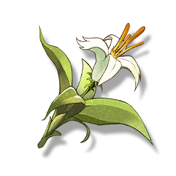

Lemongrass
Resources

A material used for cooking.
A heterogenous aromatic plant native to the New Federation, emitting a distinctive citrus aroma.
The stems and leaves of Lemongrass can be extracted for essential oils, for the production of perfumes and soaps, and can also be used as a seasoning to enhance the flavor of food.